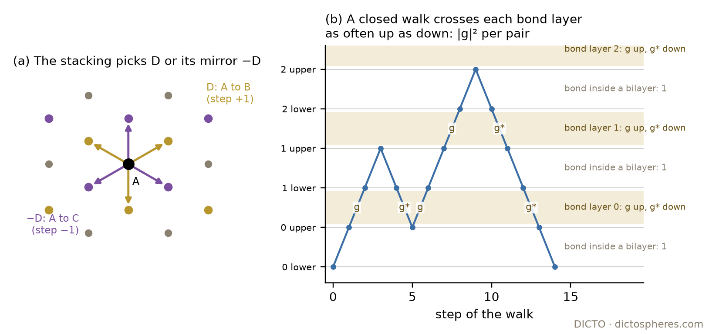
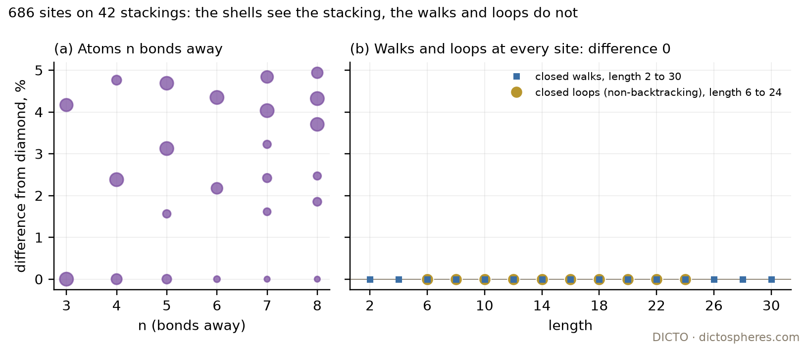

Stand at one atom of a crystal and walk from atom to atom along the bonds, never turning straight back, until you are home again. How many such round trips are there of each length? In diamond and in its hexagonal cousin lonsdaleite the atoms are packed differently, and further neighbours are not even equally many. Yet DICTO found in #74 that the round trips come out the same, to the last digit, for every stacking he tried. Here we prove it for every stacking, every atom and every length.
The network of a stacking. Let Λ be the triangular lattice of unit spacing, spanned by a1 and a2, and t = (a1 + a2)/3; the three close-packed positions A, B, C are Λ, Λ + t, Λ + 2t. A stacking is a sequence σ = (σk), k ∈ ℤ, of letters with σk+1 ≠ σk, periodic or not. Its tetrahedral network Gσ, as #74 builds it (loops2.py), has at each bilayer k a lower and an upper atom (k, x, 0) and (k, x, 1) at every point x of position σk. Each lower atom is bonded to the upper atom above it, and each upper atom (k, x, 1) to the three lower atoms (k+1, y, 0) of the next bilayer with |y − x| = 1/√3. Every atom has four bonds. With ABC repeated, Gσ is the diamond network (3C); with AB, lonsdaleite (2H); with ABAC, ABCACB and ABABCBCAC, the polytypes 4H, 6H and 9R. The pyrochlore network of the stacking (DICTO Janus c/h Pyrochlore, #60) has a site at the midpoint of every bond, two sites being joined when their bonds share an atom; it is the line graph of Gσ.
Loops. A closed non-backtracking loop of length m at a site v is a walk v = v0, v1, …, vm = v along bonds that never turns straight back (vi+1 ≠ vi−1), including at the start (v1 ≠ vm−1). These are the loops counted in #74 (the trace of the Hashimoto edge matrix, per site). We write tm(v) for their number and Wm(v, w) for the number of all walks of length m from v to w.
Σm≥1 tm um/m = −log(1 − u²) + Σj≥1 (1/j) Σi=0..j C(j, i) Wi ui (−3u²)j−i,
where Wi is the number of closed walks of length i at a site of diamond: 0 for odd i and the Domb number (OEIS A002895: 1, 4, 28, 256, 2716, …) for i = 2n. The loop numbers are 0 for odd m and for m = 2, 4, and, for m = 6, 8, …, 34, the values 24, 48, 480, 3432, 25704, 194256, 1509072, 11820000, 93722376, 750276792, 6056400480, 49241424120, 402912569544, 3315331754256, 27416593190640 that DICTO computed in #74.
The same holds for all closed walks (Wm(v, v) equals Wm at every site of every stacking) and for walks between the two ends of any bond or any path of two bonds (Lemma 2). Two corollaries follow with the same proof.
The networks themselves are not the same: the numbers of atoms 3 to 8 bonds away differ between sites by up to 5% (Figure 2a). Theorem 1 says that the loops, which these differences would seem to affect, do not see them.
Levels. Give the atom (k, x, u) the level ℓ = 2k + u. Every bond joins neighbouring levels. Between levels 2k and 2k+1 the bonds are the vertical bonds inside bilayer k, one per atom; between 2k+1 and 2k+2 lies the bond layer k, three bonds per atom. Write D = {t, t − a1, t − a2}, the three shortest vectors of Λ + t. A bond of bond layer k goes from (k, x, 1) to (k+1, x + d, 0) with d ∈ εkD, where εk = +1 if σk+1 − σk ≡ 1 and εk = −1 if σk+1 − σk ≡ 2 (mod 3), since the shortest vectors of Λ − t are −D (Figure 1a). The stacking enters only through the signs εk. Let g(θ) = Σd∈D eiθ·d for θ ∈ ℝ², and let ∫ denote the normalised integral over the torus ℝ²/Λ*, where Λ* = {θ : θ·λ ∈ 2πℤ for all λ ∈ Λ}, so that ∫ eiθ·λ = 1 for λ = 0 and 0 for the other λ ∈ Λ.
Proof. A walk in Gσ is its sequence of levels P together with the in-plane displacement ds of each step, chosen from {0}, εjD or −εjD according to the step. The choices are independent: from every atom at the start of a step the available displacements are exactly these, since every layer is a translate of Λ and the bond rule is the same at every point. The walk ends at w exactly when Σ ds = y − x. For every choice, Σ ds − (y − x) lies in Λ (both ends of the walk lie in the same position class as w), so the number of choices with Σ ds = y − x is ∫ e−iθ·(y−x) Πs (Σd eiθ·d). ∎
Two facts about g. (i) g(−θ) is the complex conjugate ḡ(θ), so g(εθ)g(−εθ) = |g(θ)|² for ε = ±1. (ii) |g(θ)|² = 3 + Σλ eiθ·λ, the sum over the six shortest vectors λ of Λ (the differences of two elements of D); so |g|² is invariant under the twelve symmetries of Λ fixing 0, which permute the six shortest vectors transitively and preserve the torus integral. Hence, for any function F of |g|², the integral JF = ∫ F eiθ·λ is the same for all six shortest λ.
Proof. (a) A closed level path P crosses each bond layer j as often upwards as downwards, nj times each. By Lemma 1 and fact (i) its contribution is ∫ |g|2n(P) with n(P) = Σ nj, whatever the signs εj. The level paths and their numbers n(P) depend only on m and on the parity of the start level; the reflection ℓ ↦ 4k + 1 − ℓ exchanges levels 2k and 2k+1 and maps bilayers to bilayers and bond layers to bond layers, so the parity does not matter either (Figure 1b). (b) For a vertical bond, the level paths from 2k to 2k+1 still cross every bond layer equally often both ways, and y − x = 0: the count is ΣP ∫ |g|2n(P). For a bond of bond layer k from (k, x, 1) to (k+1, x + d, 0), d = εkδ with δ ∈ D, the level paths cross bond layer k once more upwards than downwards and all others equally often, so the integrand is |g|2n(P) g(εkθ) e−iθ·d = |g|2n(P) (1 + eiθ·λ + eiθ·λ′), with λ, λ′ = εk(δ′ − δ) two shortest vectors of Λ. By fact (ii) the integral is ∫ |g|2n(P) + 2J, independent of εk and δ. (c) Let b be the middle atom, say an upper atom (k, x, 1) (a lower one is the mirror case under the reflection of (a)). If a and c both lie above b, they lie on one level, and c − a is a shortest vector of Λ: the integrand is |g|2n(P) e−iθ·(c−a), of integral J. If a lies below b and c above, the level paths cross bilayer k and bond layer k once more upwards, and the integrand is that of a bond in (b). In every case the count is given by a formula in which σ does not appear; diamond is one of the stackings, so the count is diamond's. ∎
Diamond's symmetries carry every bond to every other and every path of two bonds to every other (the 24 symmetries fixing an atom permute its four bonds in all 24 ways). So in Lemma 2 the counts of (b) are one number for all bonds of all stackings, and those of (c) one number for all paths of two bonds.
Proof. By (a), W2n = ΣP H(n(P)), since ∫ |g|2a = H(a): ga = Σ (a!/(i!j!k!)) eiθ·(id1+jd2+kd3) and the exponents determine (i, j, k). The number of closed level paths of length 2n with n(P) = a is the constant term of the 2×2 transfer matrix M(φ)2n, M = [[0, 1 + √z e−iφ], [1 + √z eiφ, 0]] (weight √z per crossing of a bond layer), and M² = |1 + √z eiφ|² I, whose n-th power has za-coefficient C(n, a)² at φ-frequency 0. ∎ This is Peter Bala's comment on A002895 (the Domb numbers are the row sums of the cube of the triangle C(n, k)²), read as walks: line, then layers.
From walks to loops. Let H be any graph in which every vertex has q + 1 neighbours, finite or not. Let Aj(x, y) be the number of non-backtracking walks of length j from x to y (with no condition at the ends). They satisfy A0 = I, A1 = A, A2 = A² − (q+1)I and Aj+1 = A Aj − q Aj−1 for j ≥ 2, where A is the adjacency matrix: so Aj(x, y) is a fixed integer combination of the walk numbers Wi(x, y), i ≤ j.
Proof. Let ē be e reversed, Pk(e, y) the number of non-backtracking walks of length k with first step e that end at y, and αk, βk the numbers of those whose last step is e, respectively ē. A walk with first step e is e followed by a non-backtracking walk from b whose first step is not ē, so P1(e, y) = [y = b] and Pk(e, y) = Ak−1(b, y) − Pk−1(ē, y): unwinding, Pk(e, y) = Σi=0..k−1 (−1)i Ak−1−i(xi, y) with xi = b for even i and a for odd i. Removing the last step, α1 = 1, β1 = 0, αk = Pk−1(e, a) − βk−1 and βk = Pk−1(e, b) − αk−1. Finally a loop with first step e is a walk with first step e back to a whose last step is not ē: τm(e) = Pm(e, a) − βm. Only Aj(x, y) with x, y ∈ {a, b} occur. ∎
Proof of Theorem 1. Gσ has four bonds at every atom (q = 3). By Lemma 3, τm(e) for a bond e of Gσ is a fixed combination of walk numbers that Lemma 2 (a), (b) shows to be diamond's; so τm(e) is diamond's value, which is the same for all directed bonds of diamond. Then tm(v) = Σ τm(e) over the four bonds e leaving v is the diamond value at every site. For the formula, take the quotient X of diamond by a large multiple of its lattice of translations, so that no walk of length ≤ m wraps round. X is finite with every vertex of degree 4 and |E| − |V| = |V|. The Ihara–Bass formula, Σm Nm um/m = −(|E| − |V|) log(1 − u²) − log det(I − uA + 3u²I), with Nm = |V| tm and log det = −Σj tr (uA − 3u²)j/j, tr Ai = |V| Wi, gives the stated series after division by |V|. ∎
Proof of Corollary 2. Let S be the incidence matrix of atoms and bonds. The pyrochlore network has adjacency matrix SᵀS − 2I, and (SᵀS)j = Sᵀ(SSᵀ)j−1S with SSᵀ = A + 4I. So the number of walks of length m between two pyrochlore sites e and f is a fixed combination of Wi(x, y) with x an end of bond e and y an end of bond f. For e = f these are pairs of type (a) and (b) of Lemma 2; for neighbouring sites e = {a, b} and f = {b, c} they are of types (a), (b) and (c). Lemma 3 with q = 5 then gives the loops, as in the proof of Theorem 1; diamond's pyrochlore network carries every directed pair of neighbouring sites to every other, by the symmetry noted after Lemma 2. ∎
Proof of Corollary 3. The same, with one level per close-packed layer. A step inside a layer contributes c(θ) = Σλ eiθ·λ over the six shortest λ, a real function invariant under the symmetries of Λ; a step to the layer above contributes g(εkθ) and to the layer below g(−εkθ). Closed walks give products of c and |g|², and so does a step between touching spheres, up to the factor treated in Lemma 2 (b). fcc carries every pair of touching spheres to every other, so Lemma 3 with q = 11 gives the loops. ∎

The proof was checked against exact integer counts. The networks were built from their bond rule (that of loops2.py and oeis_checks.py) on windows of N × N in-plane cells with N larger than the walk length, so that no walk can wrap round, and with enough bilayers above and below the tested sites that no walk reaches the window's edge. The tested sites are all sites of one period, or of 12 consecutive bilayers when the period is longer or the stacking aperiodic.
| Stackings | What was counted, at every tested site | Result |
|---|---|---|
| 42: 3C, 2H, 4H, 6H, 9R; 30 random periodic stackings, periods 4 to 12 (hexagonality 0.17 to 0.80); Fibonacci approximants of periods 3, 5, 8, 13, 21; the aperiodic Fibonacci stacking; one random aperiodic stacking. 686 sites. | closed walks, lengths 0 to 30; walks between the ends of every bond and of every path of two bonds, lengths 0 to 30; closed non-backtracking loops, lengths 1 to 24 | all equal to diamond (Domb numbers; Ihara–Bass values) |
| 19 of these (2H to rand07, the approximants, both aperiodic ones) | pyrochlore network: closed walks and loops, lengths 1 to 14, every site | all equal to 3C |
| the same 19, as sphere packings | closed walks and loops, lengths 1 to 12, every sphere | all equal to fcc |
| diamond | the chain formula of the Proposition, n = 0 to 15 | equal to the Domb numbers |
| controls | atoms 3 to 6 bonds away: 3C 24, 42, 64, 92 and 2H 25, 44, 67, 96 (OEIS A008253, A008264); per site, n = 3 to 8, up to 4.9% from diamond | the networks differ, as they should |

(1) Theorem 1 is about counts, not shapes: boat-shaped six-rings occur only where the stacking is hexagonal, 3h/2 per atom against 2 − 3h/2 chairs (#74, the count after its Theorem 1), yet the numbers of loops agree. (2) Lemma 2 covers pairs of sites at most two bonds apart. For sites further apart the networks differ, which is why the shells differ; the equality is spectral (every site has the same local spectrum), not an isomorphism. 4H and 6H are thus infinite networks whose sites are not all alike but have equal numbers of closed walks: walk-regular but not vertex-transitive. (3) The step from loops to the frozen-in entropy of spin ice and of ice, item (2) of #74 Section 5, is unchanged: the entropy depends on how loops overlap and combine, not only on their numbers, and its equality for 3C and 2H is still supported by numerical evidence only (Nagle 1966; Xu, Lin and Zhang 2025). (4) The proof needs every layer to be a full close-packed layer and only nearest-neighbour bonds; it does not cover stackings with faults inside a layer, or networks with longer bonds.
Known, credited. Nagle (1966) noticed, for ice, that the generating function of walks returning to the origin is the same for hexagonal and cubic ice (as reported by Isaev, McKay and Zhang 2024, §8.2); Thorpe (1972) proved that the number of closed walks of each length is the same for all polytypes of the fcc–hcp series and of the zincblende–wurtzite series, independent of the starting point, by showing that a simple Hamiltonian has the same eigenvalues (from his abstract). This is Lemma 2 (a) and the closed-walk part of Corollary 3 for periodic stackings. Betteridge (1981) found an exact one-to-one correspondence of the nearest-neighbour s bands of fcc and hcp, and He, Wilson and Ganesh (2024) explained it by a gauge symmetry, one phase per layer, that makes the band structures of all close-packed stackings equal; Lemma 1 with fact (i) is the same mechanism, written for walks. The Ihara–Bass formula and the recursion for non-backtracking walks are standard (Ihara 1966; Hashimoto 1989; Bass 1992; for infinite periodic graphs Clair and Mokhtari-Sharghi 2001, Guido, Isola and Lapidus 2008). The chain formula is Peter Bala's comment on OEIS A002895. DICTO's earlier work, cited: the Loop Equality and its counts through length 34 (#74; HexOct book, Chapter 13); the pyrochlore network of every stacking (#60). New here: the proof of the Loop Equality for non-backtracking loops (Theorem 1), at every single site and for aperiodic stackings as well as periodic ones; Lemma 2 (b), (c) and Lemma 3, which carry the equality from closed walks to loops site by site; Corollary 2 for the pyrochlore network of every stacking; the loops of Corollary 3. We found no earlier statement that non-backtracking loop counts agree across stackings. #74 said it found no earlier statement that networks of different stacking have equal loop counts; that holds for its non-backtracking loops, but the closed-walk equality is Nagle's and Thorpe's.
Sources checked (7 November 2026). Reference library (dicto-big-brother, ~/kaleidohedra-references): INDEX.html, cited/MANIFEST.json, papers/MANIFEST.json, expansion/MANIFEST.json and cited/dicto-own.json, searched for Ihara, closed walk, return probability, walk-regular, cospectral, lonsdaleite, polytype, non-backtracking and Domb: hits only in abstracts on polytype energetics (Ising models of close-packed polytypes; Lennard-Jones polytypes; iron LPSO), not on walks; the text of all 259 PDFs, searched for the same terms: hits in Zhu et al. 2026 (lonsdaleite structure references), Görlich 2011 (return probability in causal dynamical triangulations), and the titles of Jenczyk 2024, Ambjørn–Loll 2024, Nguyen–Cava 2020, George et al. 2020, Keller et al. 2023 and the index, none on walk counts. Web, read: the OEIS entries A002895 (formulas and comments), A293237 (fcc escape probability; comment that hcp has the same value; reference Ishioka and Koiwa 1978); Crossref records with abstracts of Thorpe 1972 and Betteridge 1981 I and II; He, Wilson and Ganesh, arXiv 2405.15865 v1 (mechanism and references); Isaev, McKay and Zhang, arXiv 2409.04989 v2 (§8.2); Bercu and Montégut, arXiv 2109.08397 (random walks on ice and graphite; no comparison of stackings); OpenAlex list of the 17 works citing Thorpe 1972 (titles; none on non-backtracking walks). Bibliographic records checked on Crossref, papers not re-read: Nagle 1966; Ihara 1966; Hashimoto 1989; Bass 1992; Clair and Mokhtari-Sharghi 2001; Guido, Isola and Lapidus 2008. Records seen, not read: Ishioka and Koiwa 1978; Lukes and Nix 1973; Koiwa 1977; Wilson, Ganesh and Samokhin, arXiv 2602.18574; Clair 2013 (arXiv 1306.5454); Guido, Isola and Lapidus, arXiv math/0608229; Kempton, arXiv 1603.05553; Kong, Wyman and Xi, arXiv 2401.06022 (walk-regular planar graphs). Web searches: closed walks diamond lonsdaleite polytypes; hcp fcc return probability closed walks; Ihara zeta periodic graphs diamond; non-backtracking walks Ihara lonsdaleite wurtzite; walk-regular cospectral vertices infinite periodic graphs; ice Ih Ic residual entropy loops; Thorpe 1972 polytypes; "Random walks in polytype structures".
Study 2026-11-07-loop-equality: loop_checks.py (all checks of Section 3, exact integers; run on dicto-big-brother in two parts, 88 s and 122 s, output data-loop-checks.txt, both parts FINAL ok) and fig102.py (both figures from data-loop-checks.txt). The bond rule is that of studies 2026-10-28-pyrochlore-kagome (loops2.py, #74) and 2026-11-07-oeis-candidates (oeis_checks.py, whose C1 and C2 gave the first hint: closed walks equal to the Domb numbers at every site of 3C, 2H, 4H, 6H to length 30).